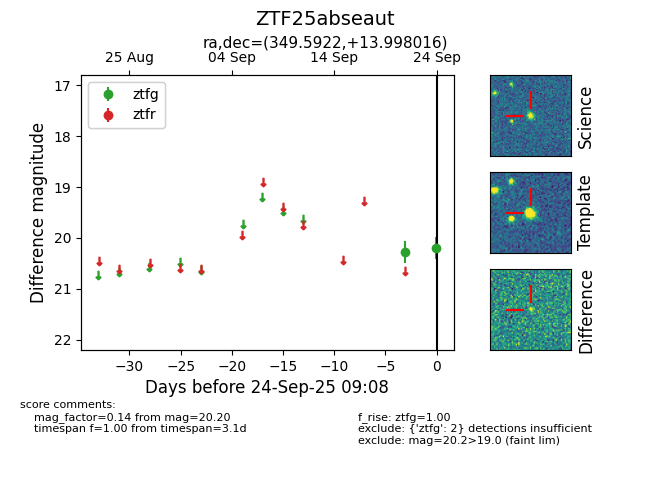

FINK: ZTF25abseaut
Lasair: ZTF25abseaut
ALeRCE: ZTF25abseaut
ZTF25abseaut (ztf,fink)
equatorial (ra, dec) = (349.5922,+13.99802)
galactic (l, b) = (91.2788,-43.08091)

last ztfg=20.20
2 ztfg detections